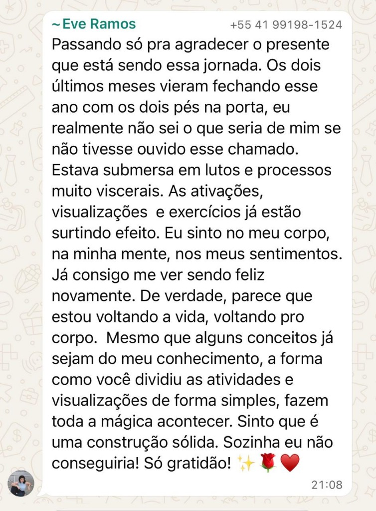

Aqui você vai treinar sua nova IDENTIDADE para manifestar sua nova REALIDADE.
Continue apenas se isso ressoa com você.
Você sente que uma nova realidade já está disponível pra você, mas mesmo tentando de tudo, na força e no esforço, ainda não conseguiu acessar e sustentar esse novo nível?
E estar em um ambiente onde a intenção é justamente essa. Está na hora de assumir o comando, ELEVAR A SUA FREQUÊNCIA pra finalmente retomar o seu poder.
Imagine-se vivendo em total alinhamento, onde cada pensamento, cada emoção e cada ação te impulsionam em direção à realidade que você nasceu para manifestar.
A Academia de Alta Frequência é o seu portal para essa existência.
Muitas pessoas tentam mudar suas vidas atuando apenas no externo. Mas a vida que você construiu até aqui é resultado direto da frequência que você emite todos os dias.
Existe uma estrutura interna organizando tudo isso. E ela não é consciente na maior parte do tempo.
Essa estrutura é formada por padrões que você aprendeu, repetiu e consolidou e que hoje operam de forma automática, construindo ou destruindo a vida dos seus sonhos sem que você perceba.
São esses padrões que definem o que você acredita ser possível (suas crenças), como você responde emocionalmente a elas, como você reage ao que você sustenta na prática.
Por isso, muitas vezes, mesmo buscando evoluir, e tentando de tudo, os resultados não chegam na mesma proporção, porque a estrutura interna ainda não foi ajustada para sustentar esse novo nível de realidade que você pediu.
Você deseja algo no consciente, que gera contradição com algo que você NÃO quer (OU NÃO ACREDITA QUE PODE) no inconsciente.
Mas quando você toma consciência de que é a co-criadora da sua própria realidade, você deixa de reagir ao que acontece e passa a MANIFESTAR, com clareza e intenção, uma vida que expressa a sua alma e real vontade... E quando vem o inconsciente trazendo a dúvida, a REPROGRAMAÇÃO e a elevação da frequência preenche esse "espaço" com argumentos mentais e perguntas que SUSTENTAM a certeza que esse objetivo irá se realizar.
Este é o ambiente perfeito para Almas que desejam viver novos níveis de expansão espiritual e pro$peridade material.
Você vai aprender a manifestar os desejos e sonhos mais elevados da sua Alma de forma consciente, através da engenharia neural e energética que já existe em você e só está esperando pra ser ativada.
Não é só mais um curso com início, meio e fim.
É uma jornada que transcende o tempo e o espaço, um cantinho só nosso, com ENCONTROS MENSAIS AO VIVO COMIGO e com meu Clã, todo mês você recebe ferramentas para elevar a sua frequência e co-criar a realidade que você ESCOLHE viver, e não mais aquela que se apresenta a você.
Além dos encontros mensais temáticos comigo, onde vamos falar de espiritualidade, expansão da consciência, prosperidade, portais de ativação pra reprogramação e elevação de frequência, você vai ter acesso a praticamente todos os meus cursos, programas e meditações exclusivas.
Com o tempo, o que antes exigia esforço começa a se tornar natural.
Porque o padrão foi REPROGRAMADO.
ESTE É O SEU NOVO PONTO DE VIRADA.
QUERO ENTRAR PARA A ACADEMIAConduzida pela Juliana. Não é uma aula, é uma experiência de ativação de campo, expansão e conexão com sua frequência mais alta.
Entenda o propósito da frequência trabalhada, como ela ativa seus arquétipos e o que ela vai mover na sua realidade.
Simples, poderosa e integrada à rotina, para o que você escolhe manifestar sair do campo energético e entrar na sua vida real.
Um lugarzinho no nosso clã esperando por você. Uma comunidade de mulheres que caminham juntas, compartilham expansão e sustentam a frequência umas das outras.
Todo o material gravado: Tzolkin, Manifestação, Abundância, Frequência, Autenticidade e Expressão da Alma, disponível a qualquer hora, de onde estiver.
Um processo contínuo de co-criação da realidade, onde o corpo é o templo onde a abundância se materializa e cada mês você sobe um degrau a mais.

Se entrar e sentir que não era o momento — é só mandar um e-mail.
Devolvemos tudo em até 7 dias. Sem pergunta. Sem julgamento.
(O que acreditamos ser bem improvável depois que você sentir a egrégora.)
É uma comunidade de assinatura para mulheres que desejam manifestar abundância através da elevação de frequência, arquétipos e co-criação consciente da realidade. A cada mês, você recebe meditações com ativações, aulas e práticas semanais que integram a transformação na sua rotina.
Assim que confirmado o pagamento, você recebe por e-mail seus dados de acesso à plataforma e o link para entrar no grupo de WhatsApp da egrégora. O acesso é imediato.
Não. A Academia é uma assinatura contínua — uma jornada que transcende o tempo e o espaço. Todo mês chegam novas frequências, novas ativações e novas práticas. Não existe uma última aula. Existe uma expansão contínua.
Enquanto a assinatura estiver ativa, você continua com acesso completo à plataforma e à comunidade.
Você pode cancelar diretamente pela plataforma na sua área de membro, a qualquer momento, sem burocracia.
Sim. Você pode tirar dúvidas diretamente na plataforma ou pelo nosso e-mail de suporte. Atendimento de segunda a sexta em até 48 horas úteis.